Bruticus
"Generation 2" Giftset (Combiner Wars) [Online Retailer Exclusive]
Bruticus
"Generation 2" Giftset (Combiner Wars) [Online Retailer Exclusive]
Allegiances
: Decepticons (Generation
2?)
Set Price
: $100 U.S.
(NOTE: Because this set is composed of repaints,
this is not a full-blown review. This mainly covers any changes made to
the set and the color scheme, and merely compares it to the original versions
of these molds. For a review on the mass-release Shockwave, go
here
.
For a review on the mass-release Decepticon Brawl, go
here
.
For a review on the mass-release Swindle, go
here
.
For a review on the mass-release Blast Off, go
here
.
For a review on the mass-release Vortex, go
here
.
For a review on the mass-release Onslaught, go
here
.)
Blast
Off (G2)
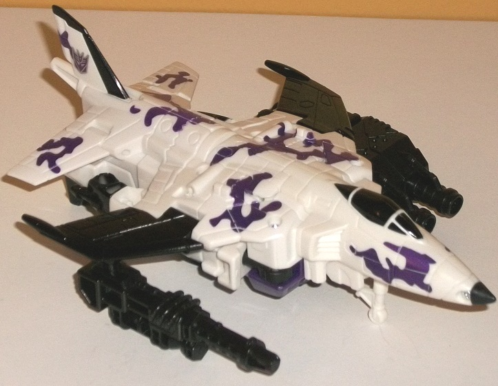
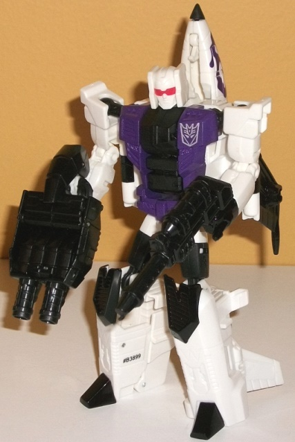
Size
: Deluxe
Difficulty of Transformation to Robot
:
Easy
Difficulty of Transformation to Leg
:
Very Easy
Difficulty of Transformation to Arm
:
Very Easy
Color Scheme
: White, black, dark
metallic purple, and some glossy black and red
Individual Rating
: 8.2
The original G2 Blast
Off toy was actually fairly realistically colored for a space shuttle--
he's mostly black and white, which of course is absolutely fitting for
a space shuttle, even if by itself it isn't the most exciting color scheme.
The paint used on Blast Off is a glossy color compared to the more "straightforward"
black plastic. Of course, it being G2, they had to add purple camo-- which
OF COURSE makes sense for ANY vehicle, much less a space shuttle-- and
so it's been applied to this toy, as well. Granted, since Blast Off is
now a jet the concept of camo makes more sense, but purple camo never makes
sense. It still
looks
great, though, and all the camo really looks
awesome on the vehicle mode in particular and breaks up all the white to
keep it from getting too one-tone or boring. In robot mode there's a bunch
of nice metallic purple paint on the chest, but unfortunately it's not
used anywhere else on the robot mode-- the knees, feet, and fists are black,
and the head has no paint detailing beyond the red optics. It's unfortunate,
because some purple-- particularly on the lower legs or head-- would really
help the robot mode pop more. As is, it looks a little boring. As with
the other deluxe Combaticons in this set, Blast Off's weapons and hand/foot/gun
are both solid black plastic. One thing I should mention now that bugs
me not just on Blast Off, but on ALL the G2 Combaticons in this set-- is
that they don't have the G2 symbol! They have the G1 Decepticon symbol,
which is just bizarre-- why the heck would you make a G2 set with G1 symbols?
I can follow the logic as far as "the G1 Decepticon symbol is better-recognized",
but you're already going to the more obscure G2 color scheme, so for goodness
sake give them the G2 symbols so they can match the
other
2
Combiner Wars G2 sets! Sigh.
No mold changes have
been made to Blast Off.
Decepticon
Brawl (G2)
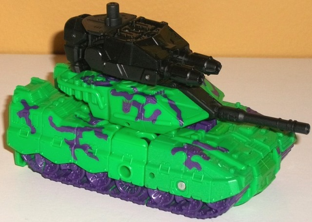
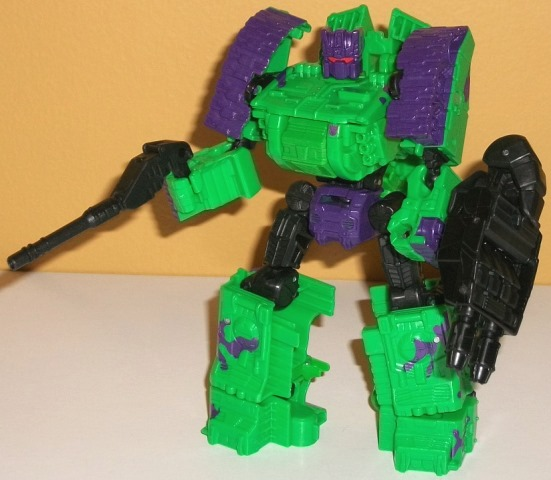
Size
: Deluxe
Difficulty of Transformation to Robot
:
Easy
Difficulty of Transformation to Leg
:
Very Easy
Difficulty of Transformation to Arm
:
Easy
Color Scheme
: Moderately light green,
dark metallic purple, and some black and red
Individual Rating
: 7.6
Brawl by and large was
the one who wasn't changed much from his traditional G1 toy-- at least
if you compare the original G1 toy and the G2 toy. For this "G2" version,
they went a bit further to differentiate him from the initial version of
this mold, with most of his plastic being a considerably lighter shade
of green, as opposed to the dark olive of the original CW Brawl. The lighter
shade helps bring out all that nice mold detailing quite well. Like with
the other G2 Combaticons, Brawl of course has the wonderfully nonsensical
metallic purple camo paint job over all of his vehicle mode, AS WELL AS
metallic purple treads-- it all comes together very nicely, keeping the
vehicle mode from looking remotely boring. Given how much of the vehicle
mode is visible in robot mode, it also keeps the robot mode from looking
boring as well, especially with those marvelous purple treads. In robot
mode there's also some metallic paint on the crotch and robot head, which
helps with the color variation as well, and he's got his visor painted
red which looks GREAT against said purple to the point that I wish it was
used a bit more. There's also some black used for the hand/foot/gun, upper
legs, tank gun, and a few other minor parts-- this helps bring some dark
to the color scheme. That said, I do wish just one more fairly major color
was in the mix, to help vary things up a little more-- but it still all
fits right in with the "G2" theme of the set.
No mold changes have
been made to Decepticon Brawl.
Onslaught
(G2)
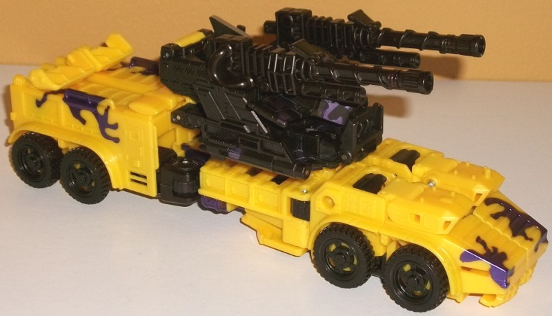
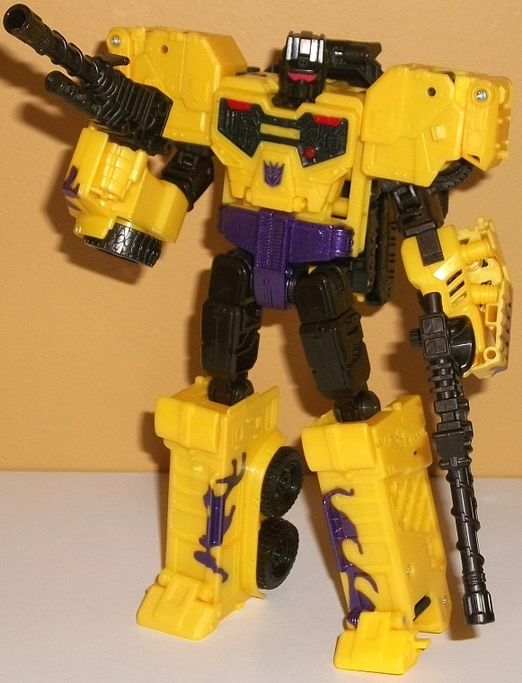
Size
: Voyager
Difficulty of Transformation to Robot
:
Easy
Difficulty of Transformation to Torso
:
Medium
Color Scheme
: Milky yellow, black,
dark metallic purple, and some red, silver and metallic black
Individual Rating
: 8.3
Onslaught's unique color
for the G2 Bruticus set is yellow-- that and black are his main plastic
colors. Of course the black contrasts against the yellow fairly well, but
the yellow plastic itself is not of a particuarly attractive shade. Now
of course, if you've been reading my reviews for a while you know yellow
is one of my least favorite colors so there's that, but even on top of
that this doesn't look that great. It looks cheap-- now, I'm not saying
it IS cheap, just that it LOOKS like it, mind you. Why exactly is hard
to pin down, it just doesn't look great. Of course, Onslaught has some
metallic dark purple camo mostly visible on Onslaught on the sides of the
back pieces of the vehicle mode and on the very front pieces. Onslaught
has a lot of other metallic dark purple camo, but unfortunately most of
it's on the black portions that form Bruticus' chest, so it's not very
visible in either of Onslaught's "normal" modes. He does also have some
purple on his waist, which helps break up the colors in robot mode a bit
more and looks quite nice. The chest also has some cool metallic black
and red paint on the details, and his head has a red visor. Still, I think
a bit too much emphasis was put on the paint on his combiner chest, as
otherwise he seems slightly paint-barren-- no paint on the sirens, the
vents, the shoulders, the fists, or the guns.
No mold changes have
been made to Onslaught, but unfortunately he has the same (fairly easily
fixable) upper leg misassembly that Pyra Magna from
Victorion
has.
Shockwave
(G2)
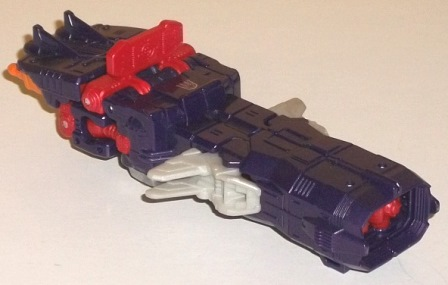
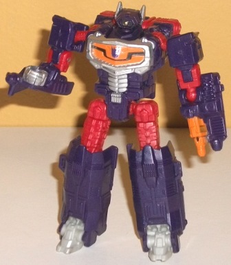
Size
: Legend
Difficulty of Transformation
: Easy
Color Scheme
: Dark purple, moderately
dark red, and some light milky gray, light orange, silver, and metallic
gold
Individual Rating
: 9.3
Shockwave is the odd
'Con out in this set, as he's not a Combaticon. When it comes to the fiction
he's related to them in some minor aspects, but he's also the odd 'Con
out in that there was never a G2 Shockwave released-- thus, he's the only
one in this set where a G1 Decepticon symbol on him makes sense. This version
partially homages the Action Master Shockwave version, which mostly just
looked like Shockwave in robot mode but had some extra orange on the chest
and gun. And-- for the MOST part-- that's what this toy looks like. It's
the one from this set that's easily the most similar to the original version
of the mold (and if this was being sold by itself, I wouldn't recommend
this toy unless you were a Shockwave completist). The purple is pretty
much the same shade as on the Combiner Wars original, and same with the
light milky gray plastic on the feet. He's also similarly got silver on
his waist and side antennae. There's two main areas where this version
differs, and the first is the aforementioned light orange on the chest
and gun-hand. The pruple angular line through the chest really makes the
orange pop, and as the orange chest is surrounded by silver it "completes"
the chest sculpt quite well and is my favorite part of the figure. The
other major difference is that the upper legs, targeting reticle in vehicle/gun
mode, and a few minor parts are a somewhat dark red, which helps complement
the light orange. It doesn't really go with the purple that much, though
it doesn't outright clash, either, and is at least more visually interesting
than more gray. It helps his color scheme complemnent Swindle's, though,
so there's that. There's also a nice little dot of metallic gold on Shockwave's
eye, which I really appreciate (particularly since this is the only place
in the set that this color is used). One downside to the added color in
robot mode, though, is the lack of extra color in vehicle mode-- the transparent
plastic from the original CW Shockwave toy is gone, so no more transparent
light purple, which makes the front part of the vehicle/gun mode in particular
look a little bland.
No mold changes have
been made to Shockwave.
Swindle
(G2)
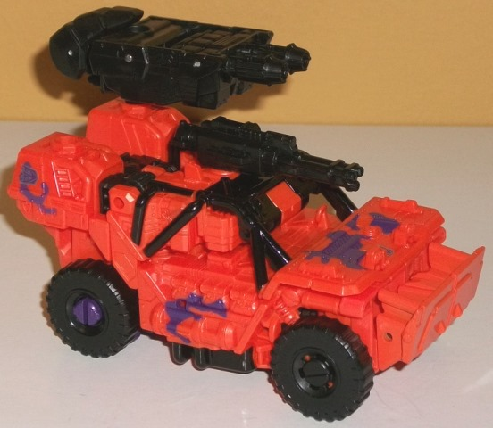
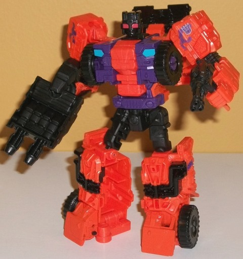
Size
: Deluxe
Difficulty of Transformation to Robot
:
Easy
Difficulty of Transformation to Leg
:
Very Easy
Difficulty of Transformation to Arm
:
Very Easy
Color Scheme
: Moderately bright
orange, black, and some dark metallic purple, moderately light blue, and
light pale red
Individual Rating
: 9.3
Swindle's main G2 color
is a fairly bright orange, and it's replicated quite well here. It's very
eye-catching and definitely a little bright-- either just a shade enough
to be loud or a shade too dull to be loud, I can't decide. Either way it's
a great plastic color, and the dark metallic purple camo really works quite
well against the orange-- heck, purple and orange are a great color scheme
pretty much regardless of how they're used. There's also some nice metallic
purple on Swindle's chest and waist, which helps connect him a bit more
to the G1/original Combiner Wars version, along with the moderately light
blue faux headlights on his chest. There's also some red on his face, which
goes good against the black. Black, by the by, is the other major color
on Swindle, which contrasts well against the bright orange, and is used
primarily on the wheels, upper legs, middle of the arms, head, and some
paint apps on the bars in vehicle mode and on the lower legs. (Of course,
like the other deluxe Combaticons, his head/foot/gun and weapon are black,
too.) All that said, though, Swindle has the least amount of purple camo
compared to the other G2 Combaticons-- there's barely any visible in his
robot mode, and some on his lower legs especially would've looked good.
Still, that's a relatively minor issue, given how well his color scheme
is as a whole.
No mold changes have
been made to Swindle.
Vortex
(G2)
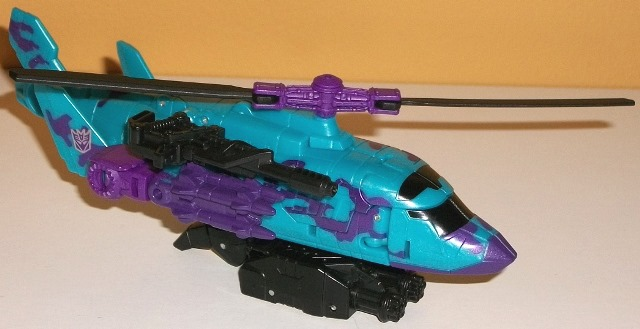
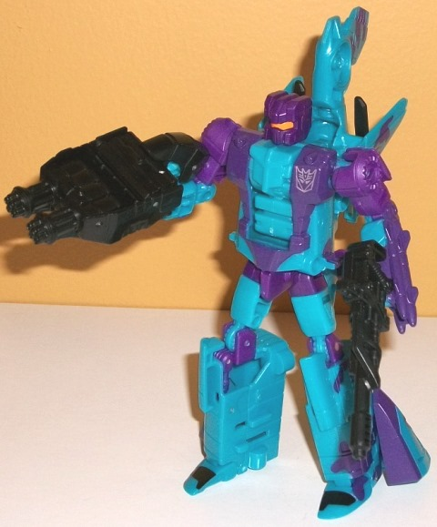
Size
: Deluxe
Difficulty of Transformation to Robot
:
Easy
Difficulty of Transformation to Leg
:
Very Easy
Difficulty of Transformation to Arm
:
Very Easy
Color Scheme
: Semi-metallic moderately
bright blue, dark metallic purple, and some dark semi-metallic purple,
black, and light pale orange
Individual Rating
: 8.7
Vortex is a bit different
from the other "main" G2 Combaticons in this set, in that black really
isn't a major color on him at all-- it's just used on his weapons and his
rotor. Instead, his color scheme is made up entirely of the usual dark
metallic purple and a very, VERY nice semi-metallic (glittery) shade of
moderately bright blue. It's an absolutely gorgeous color, and is a bit
bolder than the pale blue used on the
FoC
G2 Vortex toy
. He has the usual dark metallic purple camo on him, and
used quite generously too-- it's pretty much all over his vehicle mode,
along with some more of this shade on the missiles on the sides of his
vehicle mode, on his chest in robot mode, and on the bottom side of his
cockpit. He also has a bit of plastic of this shade that's VERY close to
the metallic dark purple used on his upper legs, head, waist, and a few
other minor parts. There's also just a touch of light pale orange on Vortex's
visor-- compared to the red used on the other Combaticons' eyes/visors--
and it looks absolutely amazing against the purple, to the point where
I wish it was used a little more, given how two-tone Vortex otherwise mostly
is (though both of his main colors definitely are awesome).
No mold changes have
been made to Vortex.
Bruticus
(G2) [Combined Form]
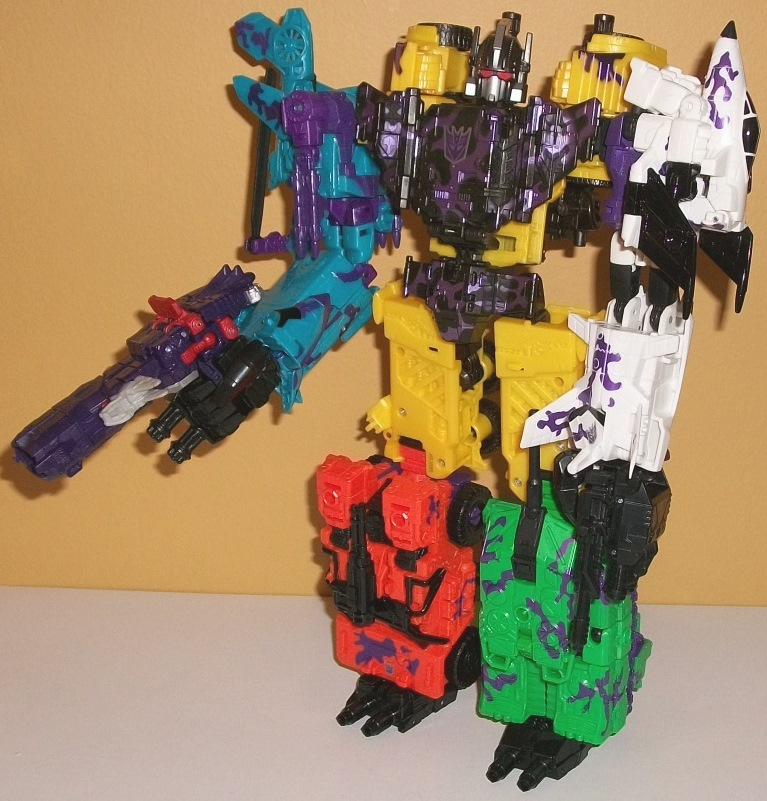
Individual Rating
: 8.9
Combined together, Bruticus--
like most gestalts-- is very obviously made from five (well, six, counting
Shockwave) separate bots. The black hand/foot/gun parts, weapons, and the
black on the chest piece and head help keep a common "theme" throughout
the entire gestalt, though that's not nearly as obvious a "common theme"
as the really nice metallic nonsensical purple camo on all of the main
five Combaticons-- and there's plenty of it on the black chest piece on
Bruticus as well, and it all goes together pretty darned nicely. The only
exception to this rule are the upper legs of the gestalt mode, which have
NO paint on them whatsoever and really should've had some more metallic
purple camo on them. The black and silver on the face is very well-done,
with most of the silver paint only visible from the front and not the side--
given how the light plays off the black plastic on the head, this can play
"tricks on your eyes" in a good way where you think certain parts are painted
silver on the head-- until the angle changes some. The red eyes on the
gestalt also look boss against the black head. As for the "odd 'bot out"--
Shockwave-- he still works pretty well as a combiner gun, and all the purple
helps him blend in with the other Combaticons regardless, even if he doesn't
have any camo paint apps. I said it before, though, and I'll say it again--
I HATE having the G1 Decepticon symbols on this obviously G2 color scheme,
with the big Decepticon symbol right in the middle of the chest being the
biggest, most obvious offender.
Bruticus (G2) Bio
:
Bruticus has immense physical power.
He may not be the smartest bot, but his overwhelming strength and indestructible
armor are more than enough to make him a nightmare in battle.
The "Generation 2" Bruticus
color scheme is always a winner, and Hasbro did a pretty nice job taking
the bright G2 schemes and applying them all fairly accurately on the CW
Combaticon molds. The "purple camo" paint apps help keep a common theme
among disparate color schemes, and the shades used for all of the Combaticons--
except perhaps Onslaught-- are done quite well, with Swindle and Vortex
in particular colored a bit better than the "Fall of Cybertron" G2 Bruticus
set. That said, the G1 Decepticon symbols are a more significant downside
than I'd have thought-- just why would you do this if you're releasing
a $100 giftset specifically homaging the G2 set?-- and out of all the CW
boxsets, this one was the least needed, given the existence of the FoC
G2 Bruticus set. Of course, the molds for this set are superior to the
FoC molds, but still-- I would've preferred a G2 Defensor in Bruticus'
place instead, if I had to choose one.
Reviews by Beastbot
Back to Transformers:
Generations Index